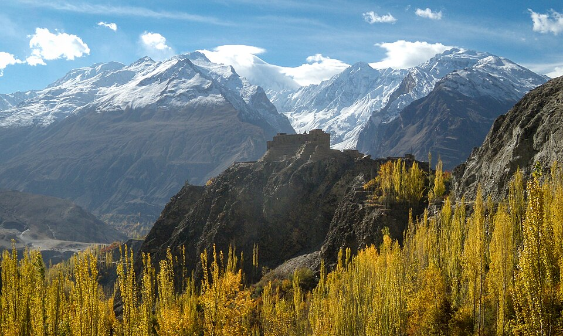
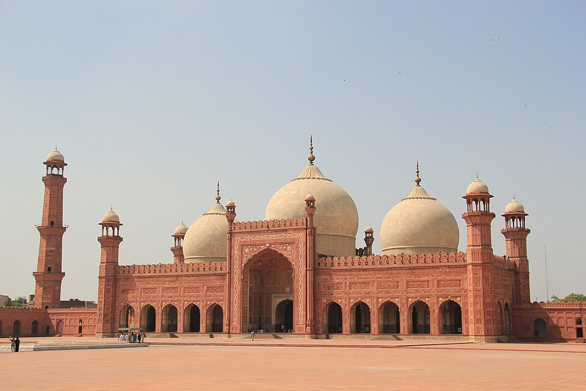
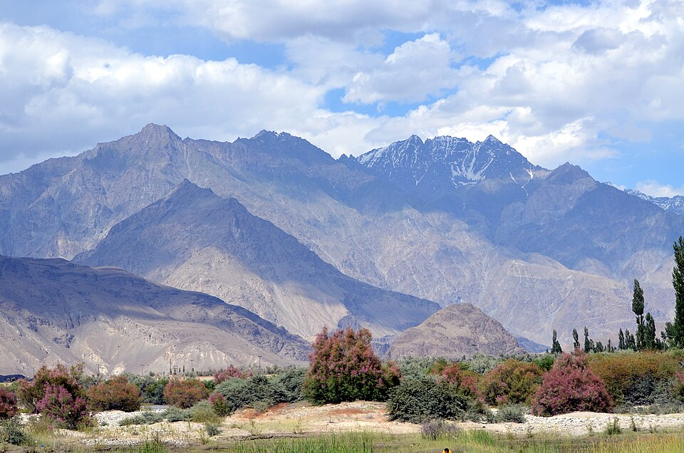
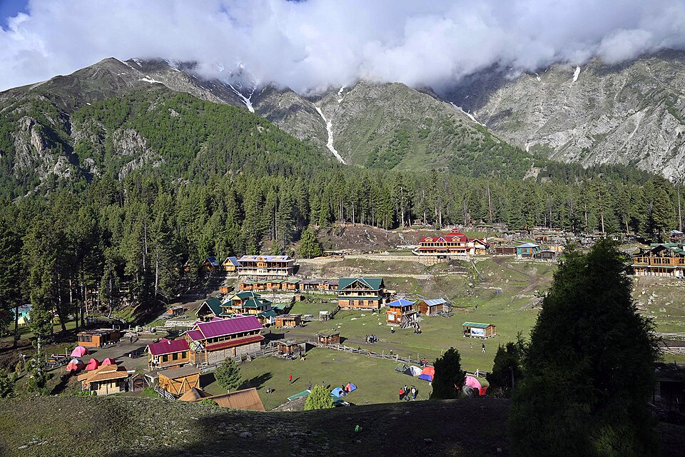

Most visited place in Pakistan
Hunza Valley

Hunza has been bestowed with natural beauty rich cultural and traditional heritage such as traditional dresses, tunes, dances and cuisines. It is famous for its delicious apples, apricots, mulberry, cherries and grapes.
Badshahi Mosjid

This most famous place of Lahore City is an important example of Mughal architecture, with an exterior that is decorated with carved red sandstone with marble inlay. It remains the largest and most recent of the grand imperial mosques of the Mughal era, and is the second-largest mosque in Pakistan.
Skardu Valley

District Skardu in Baltistan Division is located at the confluence of Indus River and Shayok River that leads toward the legendary tourist destination of the greatest mountain peaks of the world. Skardu Valley is path to some of the highest mountain peaks in the world such as Gasherbrum, K2, and K3.
Fairy Meadows

Fairy Meadows, nestled in the heart of Pakistan's Gilgit-Baltistan region, is renowned for its verdant plateaus and the imposing presence of Nanga Parbat, the world's ninth-highest peak, often referred to as the "Killer Mountain." Located in the Diamer District, this scenic meadow sits at an elevation of 3,300 meter